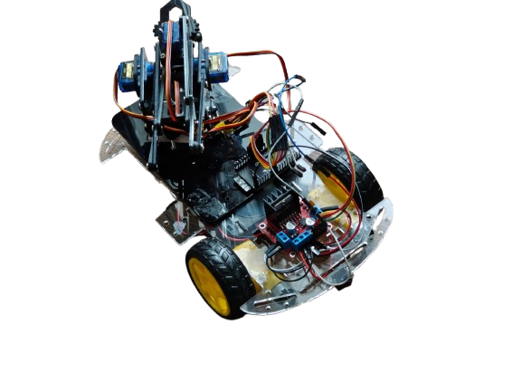
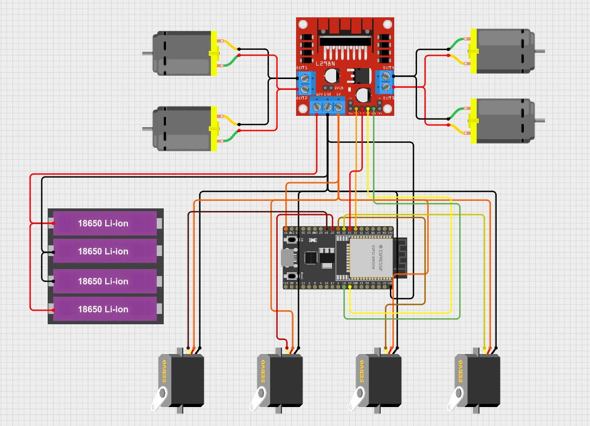

Cum functioneaza
Control pe axe
- Fiecare articulatie este controlata separat (unghiuri).
- Miscarea poate fi manuala (potentiometre) sau programata.
- Alimentarea separata pentru motoare ajuta la stabilitate.
Proiect 3
Un proiect care arata cum poti controla miscarea pe mai multe axe si cum poti construi un mecanism care ridica, roteste sau prinde obiecte.
Prezentare
Bratul robotic poate fi controlat prin butoane/potentiometre sau printr-un program care stabileste unghiurile. Este un proiect bun pentru a intelege controlul servomotoarelor si miscarea coordonata.

Cum functioneaza
Idei de upgrade
Galerie


Navigare